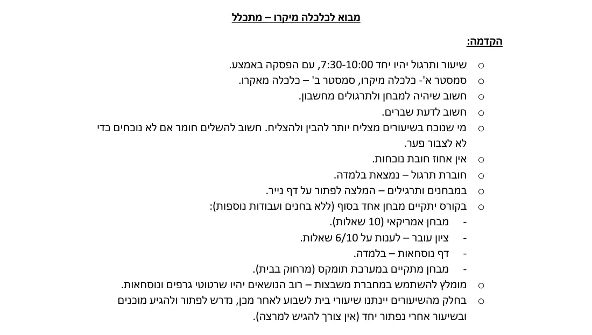
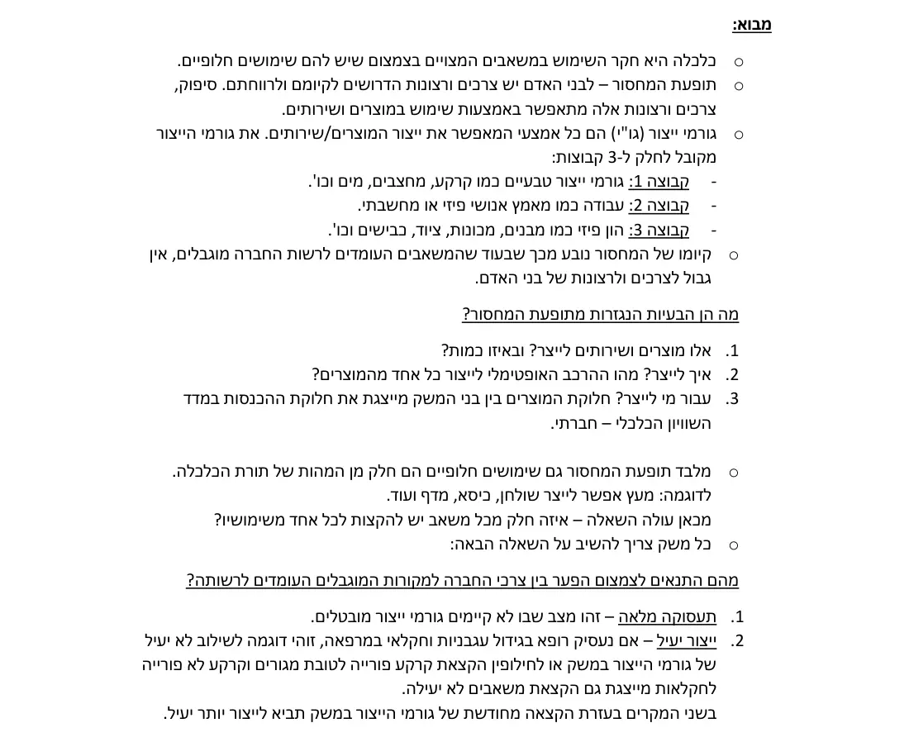
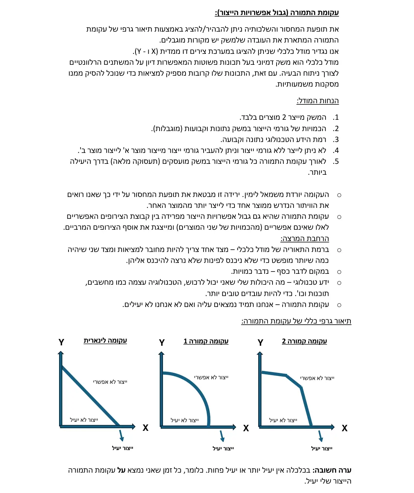
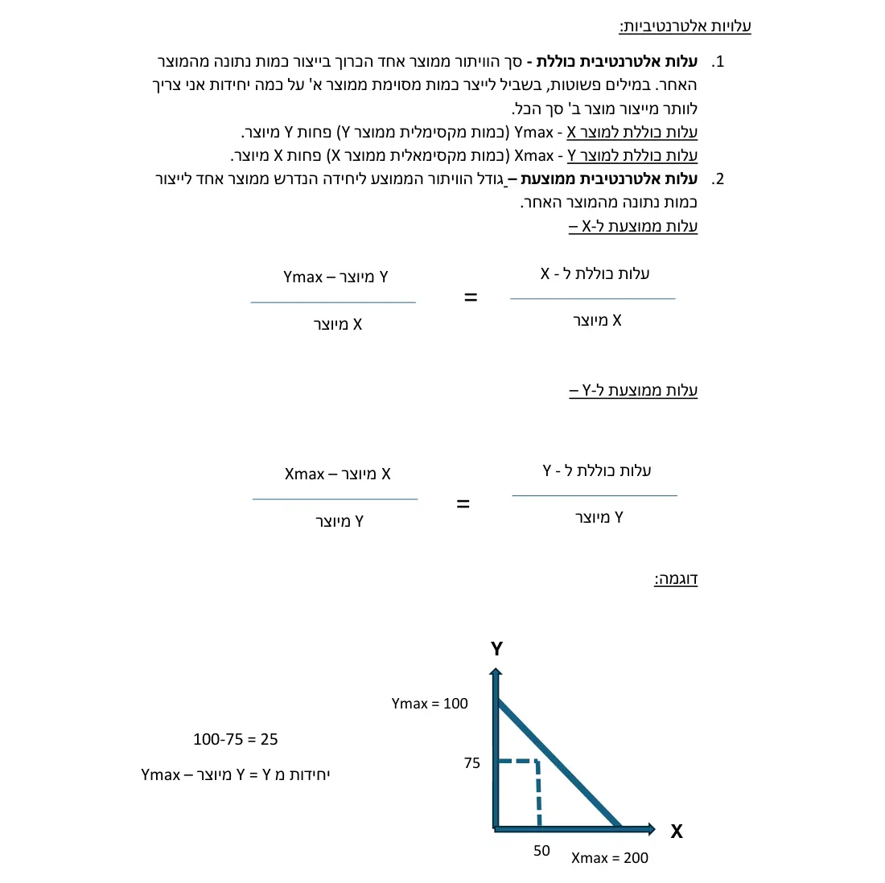
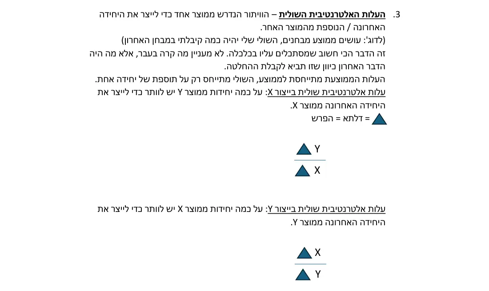
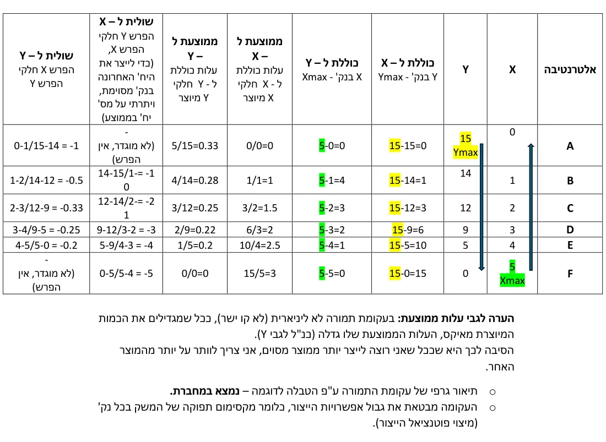
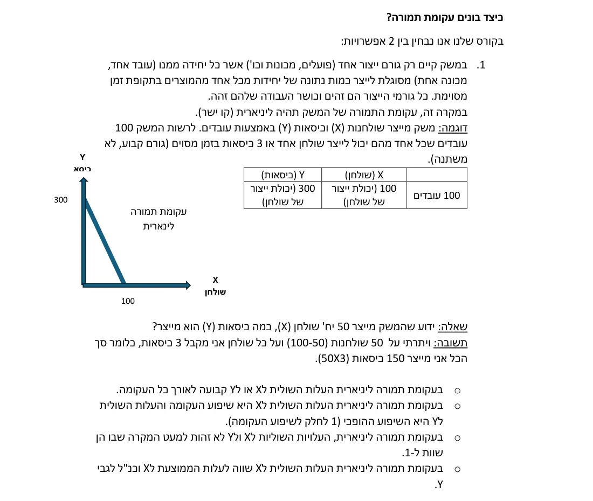
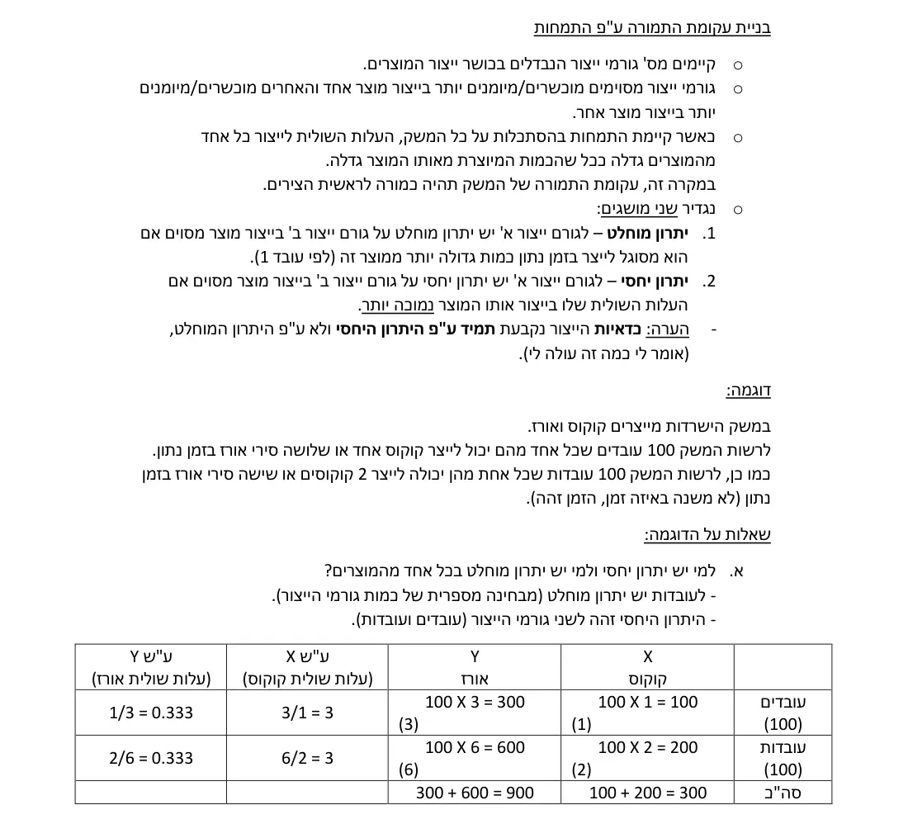
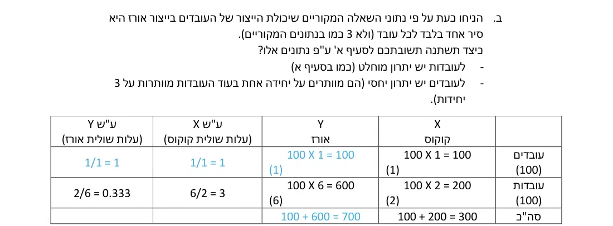
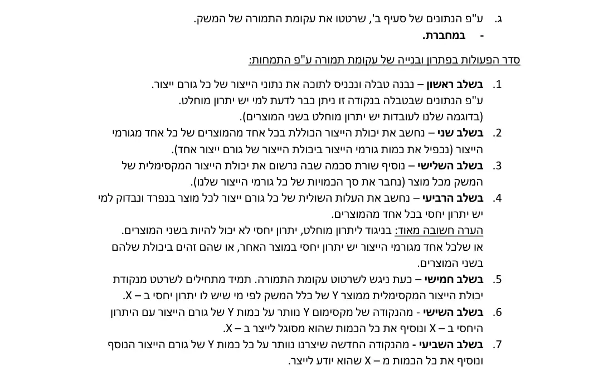
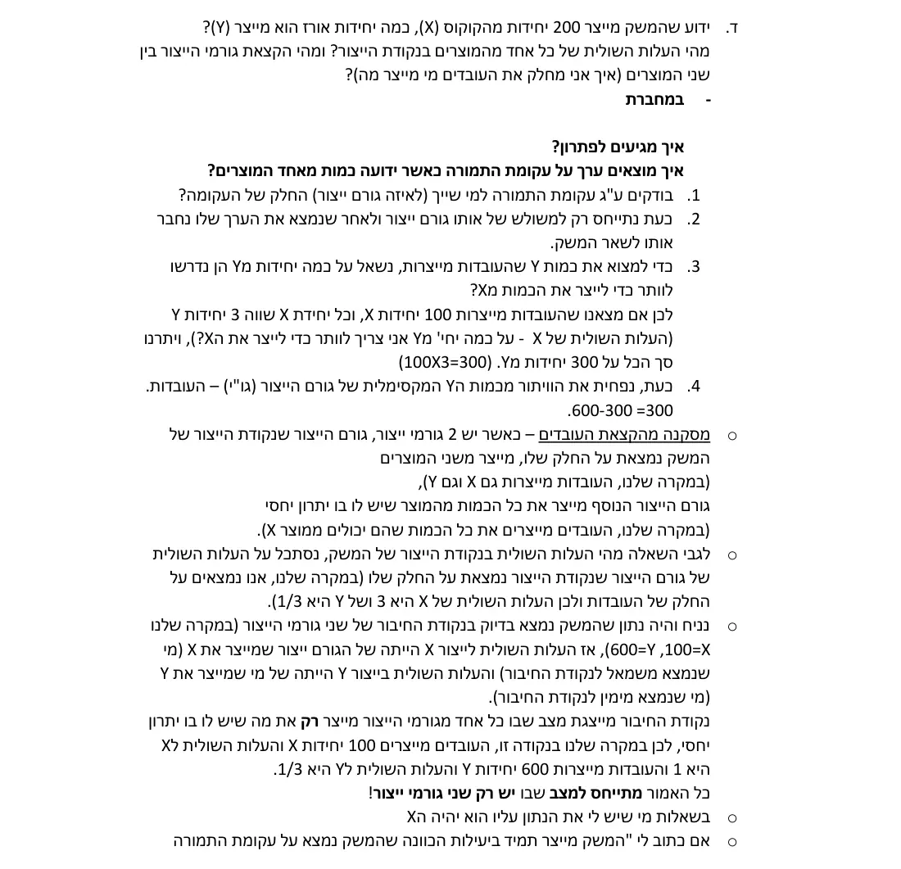
מבוא לכלכלה מיקרו – שיעור 6
תחרות משוכללת:
נגדיר שוק כאוסף של מוכרים וקונים העוסקים בחליפין של מוצר או שירות נתון.
למספר המשתתפים בשוק יש השפעה מכרעת על הדרך שבה נקבע מחירו של המוצר או של השירות הנמכר בשוק.
סוגי תחרות בשוק: מונופול = יש רק יצרן אחד בשוק (טבעי, מפלה, לא מפלה), דורפול = שני יצרנים, קרטל, מונוקסון = רק צרכן אחד בשוק ועוד.
שוק תחרותי לגבי מוצר מסוים פירושו:
יש הרבה מאוד יצרנים וצרכנים קטנים שכולם יחד מרכיבים את השוק. כל אחד מהם (הן היצרן והן הצרכן), אינו משפיע על המחיר בשוק.
כל היצרנים מייצרים את אותו המוצר והמוצרים הם הומוגניים, כלומר אין הבדל באיכות, גודל, צבע, צורה של המוצרים.
קיימת אינפורמציה מלאה בשוק. כלומר, גם הצרכנים וגם היצרנים "יודעים" הכל.
יש כניסה ויציאה חופשית של צרכנים ויצרנים מהשוק.
ביקוש (Demand) צרכנים:
מה משפיע על הכמות שהפרט/הצרכן רוצה לקנות ממוצר מסוים (X)?
מחיר המוצר (PX).
הכנסה (I)
מחיר מוצרים אחרים (PY)
טעמי הציבור
עקומת הביקוש מתארת את הקשר שבין מחיר המוצר לבין הכמות המבוקשת ממנו. לאורך עקומת ביקוש ספציפית ההכנסה, מחירי המוצרים האחרים וטעמי הצרכן קבועים.
בדרך כלל, עקומת הביקוש יורדת משמאל לימין.
משמעות העקומה היא שבכל מחיר - מהי הכמות המבוקשת על ידי הצרכנים או לחילופין, עבור כל כמות מהו המחיר המקסימלי שהצרכן מוכן לשלם?
תיאור גרפי של הגרף – במחברת.
הערה: באופן כללי, כאשר מציירים גרף דו ממדי (במישור של X ו Y), כל שינוי בפרמטרים הנמצאים על הצירים (במקרה שלנו מחיר וכמות), הוא שינוי על גבי העקומה. לעומת זאת, כל שינוי של פרמטרים שאינם נמצאים על גבי הצירים (במקרה שלנו - הכנסה, מחיר מוצרים אחרים, טעמי הציבור), הוא שינוי של העקומה (כלומר, תעלה למעלה או תרד למטה).
לפי הכלל שרשמנו, ניתן לומר שכל שינוי במחיר המוצר יגרום לשינוי על גבי עקומת הביקוש ואז נאמר שיש שינוי בכמות המבוקשת. כלומר, אם יש שינוי במחיר הוא לא משנה את הביקוש אלא את הכמות המבוקשת (הביקוש שלנו הוא העקומה כולה).
שינויים בהכנסה (I):
כדי לדעת איך שינוי בהכנסה משפיע על עקומת הביקוש, נגדיר 3 סוגי מוצרים:
מוצר נורמלי – מוצר שהעלייה בהכנסה גורמת לעלייה בביקוש ממנו וירידה בהכנסה גורמת לירידה בביקוש ממנו (לדוג': בגדים).
מוצר נחות – מוצר שהעלייה בהכנסה גורמת לירידה בביקוש ממנו וירידה בהכנסה גורמת לעלייה בביקוש ממנו (לדוג': תחב"צ).
מוצר ניטרלי – מוצר ששינויים בהכנסה לא משפיעים על הביקוש ממנו (לדוג': סיגריות).
כאשר יש שינוי בהכנסה נבקש לדעת שני דברים:
מה קרה להכנסה? (עלייה/ירידה).
באיזה סוג מוצר מדובר? (נורמלי/נחות/ניטרלי).
תיאור גרפי של הגרף – במחברת.
בהתייחס למוצר נורמלי - ניתן לראות שכאשר ההכנסה עולה, עקומת הביקוש זזה ימינה וזה נקרא שהביקוש גדל. כלומר, באותה רמת מחיר אם קודם רציתי כמות מסוימת עכשיו אני רוצה כמות גדולה יותר (ולהיפך).
בהתייחס למוצר נחות – אם ההכנסה עלתה, עקומת הביקוש זזה שמאלה וזה נקרא שהביקוש קטן/יורד. כלומר, באותה רמת מחיר אם קודם רציתי כמות מסוימת עכשיו אני רוצה פחות (ולהיפך).
שינויים במחיר מוצרים אחרים (PY):
נגדיר כמה סוגי מוצרים:
מוצרים תחליפיים – אלו מוצרים שניתן להשתמש באחד במקום בשני. כלומר, אם PY עולה, נרצה לקנות פחות ממוצר Y ולכן הביקוש (העקומה D) למוצר X יהיה גדול יותר (העקומה של X תזוז ימינה) ולהיפך. הערה: מתייחס למוצר שלנו Y מתייחס למוצר האחר.
מוצרים משלימים – אלו מוצרים שצריכתם מתבצעת יחדיו. כלומר, אם PY עולה, נרצה לקנות פחות ממוצר Y ולכן הביקוש (העקומה D) למוצר X יהיה קטן יותר (העקומה של X תזוז שמאלה) ולהיפך.
מוצרים בלתי תלויים – שינוי במחיר מוצר Y לא משפיע על הביקוש (העקומה D) למוצר X. כלומר, אין קשר בין המוצרים.
כדי לדעת איך שינוי במחיר Y משפיע על הביקוש למוצר X צריך לדעת:
האם PY עלה או ירד?
מה הקשר בין שני המוצרים? (תחליפיים/משלימים/בלתי תלויים).
תיאור גרפי של הגרף – במחברת
שינוי בטעמי הציבור:
במקרה שבו יש שינוי בטעמי הציבור, ייאמר לנו במפורש האם הביקוש למוצר מסוים עלה (העקומה זזה ימינה) או שהביקוש ירד (העקומה זזה שמאלה).
כאן נגמר הסיכום. השיעור הבא יתווסף כאן כשהסיכום יעלה.